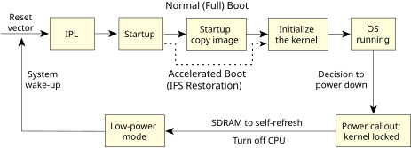

The IFS Restoration feature applies to systems that require an ultra-low power mode in which the main CPU is completely turned off while the SDRAM is left in a self-refresh state. This provides the ability to create a low-power mode with power consumption ranging from 1-3 mA (depending on the power draw of the SDRAM in self-refresh) with an accelerated wake-up/reboot.
IFS Restoration makes use of the fact that the image filesystem (IFS) is already in RAM on wake-up from this state and avoids the slow process of copying the image from FLASH to RAM. Note that when booting for the first time (SDRAM turned off), there are no time savings—savings are only on subsequent boots:
The following diagram shows the difference between a normal boot and an accelerated boot using IFS Restoration:

There are two mechanisms to achieve the IFS restoration:
On wake-up, the entire primary IFS is copied, while the secondary IFS can be reused without having to copy. Note that additional binaries can be added to the primary IFS, but these will be copied along with the rest of the primary IFS.
The advantage of kernel restoration is that it can be enabled and used with very little intervention by the user. Secondary IFS restoration may be desired for projects that wish to use multiple image filesystems, but requires more management by the user, such as maintaining multiple buildfiles and specifying the secondary IFS size and location.
It's possible to enable both kernel and secondary IFS restoration at the same time (i.e., the startup and kernel from the primary IFS are restored, and the secondary IFS is reused and automatically mounted).
IFS Restoration was designed to support the following features: